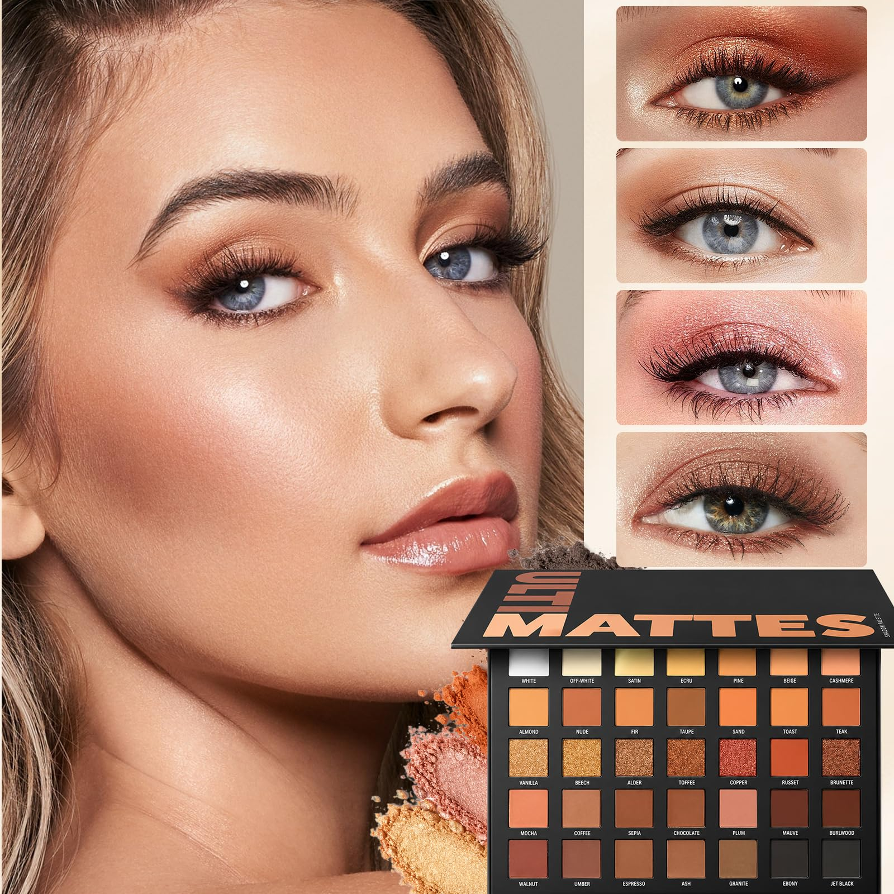

Tendencias de maquillaje
Publicado el por Giuli

Cada temporada llegan nuevas ideas al mundo del maquillaje: acabados luminosos, tonos tierra, delineados gráficos y labios protagonistas. Aquí te cuento cómo sumarte a las tendencias sin perder tu estilo.
Pasos para lograr un look de tendencia
- Prepara la piel con hidratante y protector solar.
- Aplica una base ligera y un toque de rubor en crema.
- Elige un punto focal (ojos o labios) y resáltalo con color.
Comparativa
| Opción | Ventaja | Precio |
|---|---|---|
| Base líquida | Cobertura media a alta y acabado uniforme | $20 |
| Tinte hidratante | Efecto natural y ligero para el día a día | $15 |